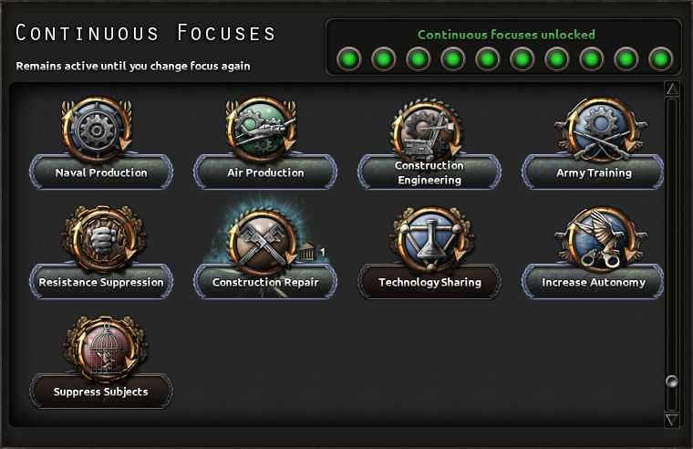

持续焦点
原页面：Continuous focus
另见：国策
持续焦点是一种特殊类型的焦点，在完成10个常规焦点后解锁。游戏中共有9个持续焦点可用。
启用持续焦点会以放弃推进常规焦点为代价，因为无论类型如何，同一时间只能选取一个焦点。
常规焦点提供一次性效果，而持续焦点在所选焦点保持激活期间持续为国家提供加成。激活的焦点需要每天 –1政治点数的维持费用。不过，该焦点可以随时停用或切换为另一个，且无需额外费用。
–1政治点数的维持费用。不过，该焦点可以随时停用或切换为另一个，且无需额外费用。

点击一个焦点图标会跳转到相应的表格行。
专用控制面板位于国策树的左下角。玩家可以在面板右上角看到该机制投入使用前还需要完成多少个焦点（黑/绿指示灯）。面板显示哪些焦点可以激活、当前是否有焦点正在生效及其相关维护成本。
无条件焦点
| 国策 | 前置条件 | 效果 |
|---|---|---|
飞机生产 我们可以重组航空工业，以消除浪费并简化生产。 |
| |
陆军训练 在每个师内组建专门的高级训练单位后，我们甚至能把过去必须留下完成训练的师也派上前线。 |
| |
建造工程 我们的建筑业仍有很大的闲置产能。只要把注意力集中于此，我们就能大幅提升建造速度。遗憾的是，机床生产已被证明是重工业扩张的主要瓶颈，因此它们无法从这一领域的努力中受益。 |
建造速度: +20% 建造速度: +10% | |
建造修复 我们将从工厂和建筑工人中组建专门的维修队，并集中控制其部署，以加快受损基础设施的重建。 |
| |
海军生产 把资源集中到我们的船坞，并让熟练的造船工人免服兵役，我们就能大幅缩短舰船的生产时间。 |
| |
抵抗镇压 通过渗透占领区的主要抵抗组织并策反其领导人，我们能大幅削减他们所能造成的破坏。 |
|
有条件焦点
| 国策 | 前置条件 | 效果 |
|---|---|---|
提高自治度 通过重组殖民地官僚机构并招募本地行政人员，我们终有一天能掌管自己的事务。 |
|
|
镇压附属国 我们的殖民地臣民对「民族自决」或「国家独立」之类的东西产生了相当愚蠢的想法。是时候让他们打消这些念头了。 |
|
|
科技共享 我们将鼓励研究机构和大学与盟国的同行建立联系。这会为我们带来科技共享加成。 |
|
加入阵营科研：
|
国家特定焦点
| 国策 | 前置条件 | 效果 |
|---|---|---|
壮大黑狮会 尽管我们已把土地丢给了敌人，战斗仍须继续。黑狮们正在对意大利人进行顽强的抵抗，因此我们应当以一切可能的方式支援他们。 |
| |
支援阿尔贝尼奥奇 在埃塞俄比亚各地，都有爱国者愿意拿起武器对抗意大利入侵者。我们必须竭尽所能支持这些勇敢的男女，去瘫痪意大利的战争机器 替代描述 游戏文件描述 |
| |
提升军事准备 让瑞士民众做好准备的工作永无止境。在入侵威胁消失之前我们无法安歇，也许永远都无法安歇。我们必须立即让国家转向防御准备。 |
激活任务：建立军事准备 | |
支援活跃民兵 我们的公民已经武装起来并被编入当地民兵，其他人都有义务尽其所能支持他们，以便我们能够抵挡联邦的敌人 |
| |
削弱宗主国影响 我们必须尽力抵抗并削弱我们的宗主国，以确保丹麦的主权。 |
|
参考资料
- 要更新页面内容，请参见/Hearts of Iron IV/common/continuous_focus文件夹中的参考文件。
- For flavor text see reference file focus_l_english.yml.
| 通用 | 通用 • 持续焦点 |
| 本体游戏 |
| 本体游戏 |
| 本体游戏 |
| 本体游戏 |
| 本体游戏 |